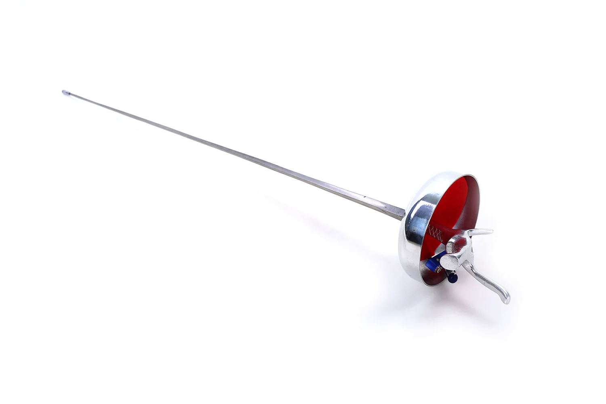

The epee is a thrusting weapon that targets the entire body, including the arms and legs.
Even though the epee and foil look similar, the epee is heavier and has a stiffer blade.
Points are scored by making contact with the tip of the blade on any part of the opponent's body.
You can even score by hitting the opponent's hand.
Unlike foil and sabre fencing, epee fencing does not follow the rules of "right of way." This means that both fencers can score a point simultaneously if they make contact at the same time.
Epee fencing is typically done in a series of three-minute bouts, with the winner being the first to score 15 points or the fencer with the most points at the end of the time limit.